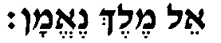
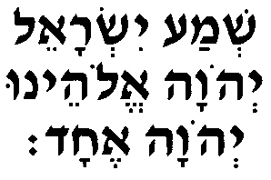
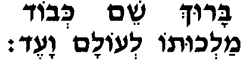
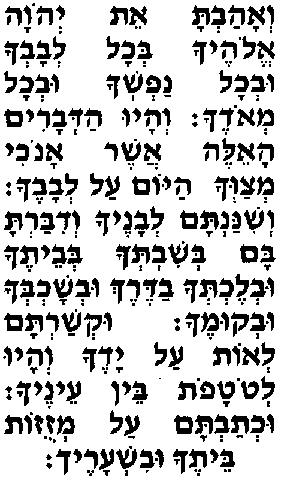
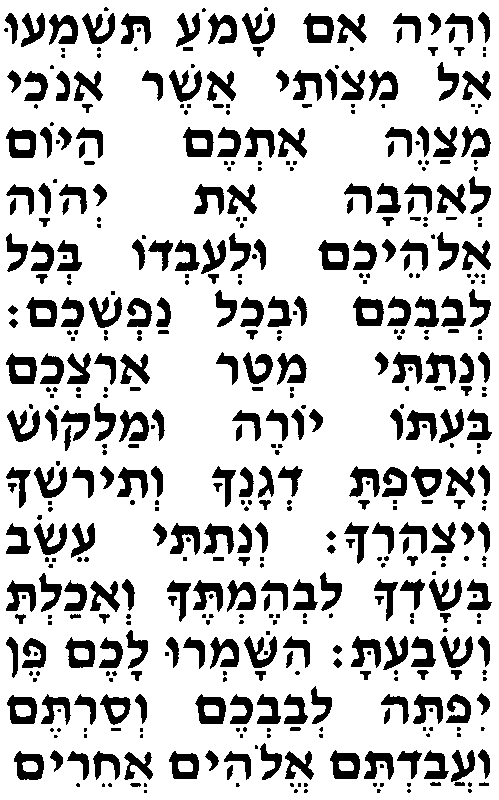
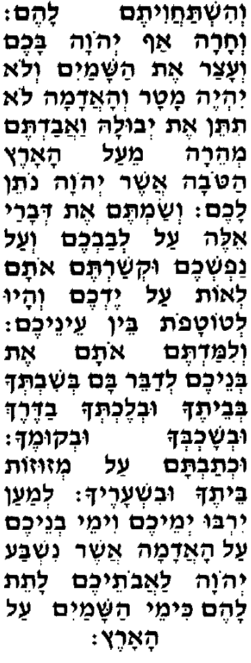
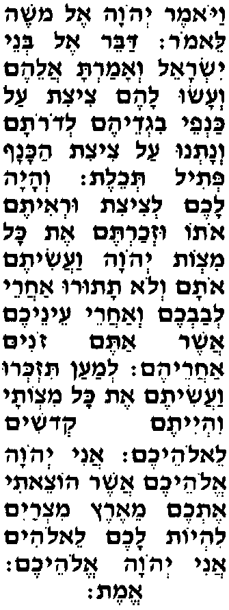

Тора заповедует читать "Шма" дважды в день, утром и вечером.
Сказано, что, читая "Шма", еврей принимает на себя абсолютную власть Б-га.
Читающий "Шма" не с группой молящихся (не в миньяне) произносит: |  |
Принято закрывать глаза рукой при чтении следующего предложения, чтобы сосредоточиться: |
прослушать  |
Шёпотом: |
 |
Затем читают три отрывка из Торы, входящие в Шма: |
 |
|
Веая́ им шамо́а тишмеу́ эль мицвота́й И вот, если прислушаетесь к Моим заповедям, ашэ́р Анохи́ мецавэ́ этхэ́м айо́м которые Я даю вам сегодня, леаава́ эт А-дона́й Элоэхэ́м - с любовью к Г-споду улеовдо́ бехо́ль левавхэ́м и служа Ему всем своим сердцем увхо́ль нафшехэ́м, и всей своей душой, ве натати́ мта́р арцехэ́м беито́ йорэ́ умалко́ш - то буду давать дождь вашей земле вовремя - и ранний, и поздний; веасафта́ дганэ́ха ветирошха́ вейицарэ́ха. а соберёшь свой хлеб, своё вино и своё оливковое масло. Венатати́ э́сэв бесадха́ ливэмтэ́ха И дам траву на твоём поле для твоего скота, веахалта́ весава́та, и будешь кормиться досыта. ишамру́ лахэ́м пэн йифтэ́ левавхэ́м весартэ́м ваавадтэ́м элои́м ахэри́м веиштахавитэ́м лаэ́м, Но берегитесь, чтобы ваше сердце не соблазнилось, чтобы вы не свернули с пути и не стали служить другим богам и поклоняться им. вехара́ аф А-дона́й бахэ́м Иначе разгневается на вас Г-сподь веаца́р эт ашама́йим и замкнёт небеса: вело́ ийэ́ мата́р не станет дождя веаадама́ ло титэ́н эт йевула́ и земля не принесёт свои плоды; веавадтэ́м меэра́ мэа́ль аэ́рэц атова́ и исчезнете вы вскоре с хорошей земли, ашэ́р А-дона́й нотэ́н лахэ́м. которую Г-сподь даёт вам. Весамтэ́м эт двара́й э́лэ аль левавхэ́м веа́ль нафшехэ́м Возложите эти Мои слова на своё сердце и на свою душу, укшартэ́м ота́м лео́т аль йэдхэ́м повяжите их как знак на свою руку, веаю́ летотафо́т бэн энэхэ́м да будут они знаками перед вашими глазами. велимадтэ́м ота́м эт бенэхэ́м И учите им ваших сыновей, ледабэ́р бам бешивтеха́ бевэтэ́ха чтобы произносить их, сидя в своём доме, увлэхтеха́ вадэ́рэх находясь в дороге, увешохбеха́ увкумэ́ха, ложась и вставая; ухтавта́м аль мезузо́т бэтэ́ха увишарэ́ха, напиши их на дверных косяках своего дома и на своих воротах, лемаа́н йирбу́ йемэхэ́м вимэ́й венэхэ́м аль аадама́ - чтобы ваши дни и дни ваших сыновей в стране, ашэ́р нишба́ А-дона́й лаавотэхэ́м латэ́т лаэ́м которую Г-сподь поклялся дать вашим отцам, продлились, кимэ́й ашама́йим аль аа́рэц. пока небеса стоят над землёй. |
  |
|
Вайо́мэр А-дона́й эль Мошэ́ лэмо́р, И сказал Г-сподь (пророку) Моше: дабэ́р эль бнэ́й Йисраэ́ль скажи сынам Израиля, веамарта́ алээ́м веасу́ лаэ́м цици́т чтобы делали себе кисти на краях своей одежды аль канфэ́й вигдээ́м ледорота́м во всех поколениях венатну́ аль цици́т акана́ф пети́ль тхэ́лэт, и вдевали в кисть на краю голубую нить. веая́ лахэ́м лецици́т уреитэ́м ото́ узхартэ́м И будет это у вас кистью, посмотрев на которую вспомните эт коль мицво́т А-дона́й вааситэ́м ота́м, все заповеди Г-спода и будете их исполнять, вело́ тату́ру ахарэ́й левавхэ́м веахарэ́й энэхэ́м а не брести вслед за своим сердцем и своими глазами, ашэ́р атэ́м зони́м за которыми влечётесь, ахарээ́м лемаа́н тизкеру́ вааси́тэм эт коль мицвота́й - чтобы помнили и исполняли все Мои заповеди, вийитэ́м кдоши́м лЭлоэхэ́м. и были святы перед вашим Б-гом. Ани́ А-дона́й Элоэхэ́м Я, Г-сподь, - ваш Б-г, ашэ́р оцэ́ти этхэ́м мээ́рэц Мицра́йим Который вывел вас из страны Египта, лийо́т лахэ́м лЭлои́м. чтобы быть вам Б-гом. Ани́ А-дона́й Элоэхэ́м - Эмэ́т. Я, Г-сподь, - ваш Б-г, - Истинно. |
 |